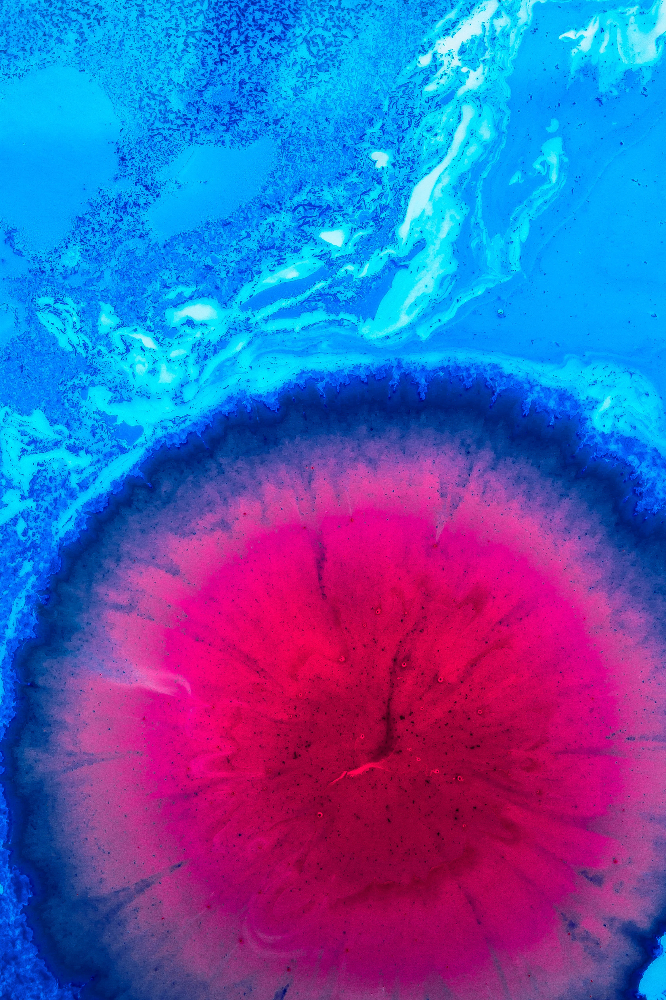
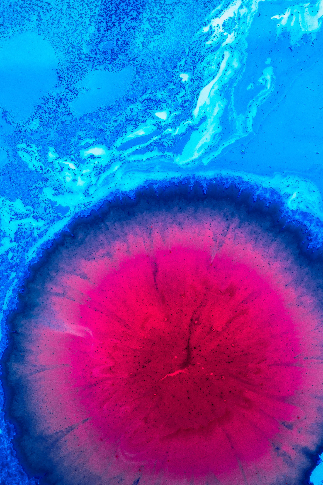
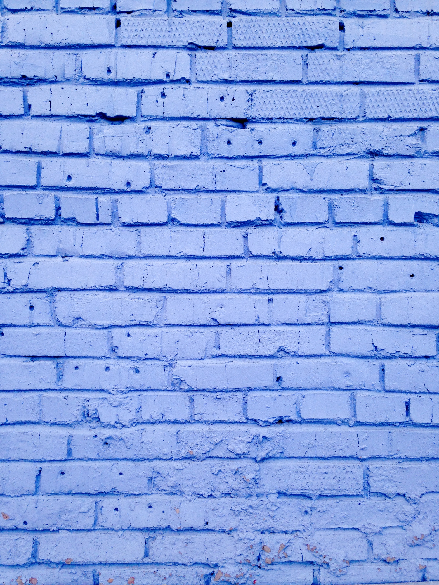
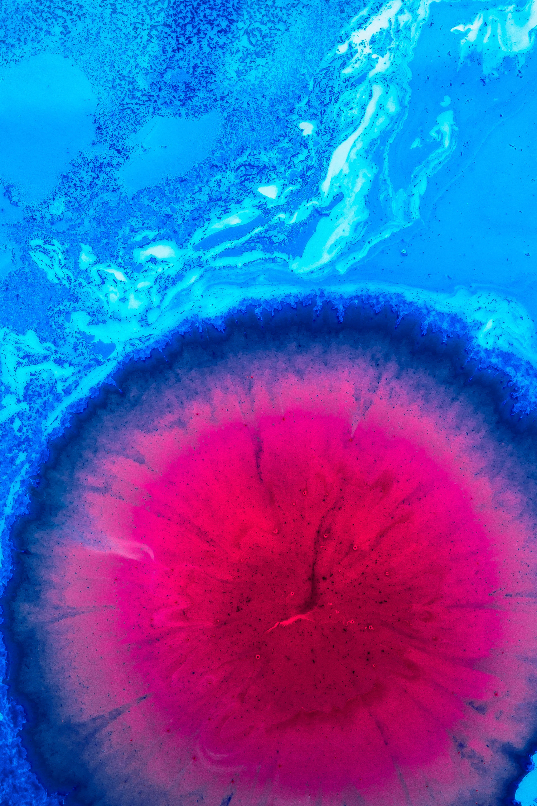

-
 

- 

-
Something Here
More
Proyecto de maquetado de una web de estilo "One Page Website", sobre una serie de "Gadgets" interactivos, realizado puramente en HTML5, CSS3, JAVASCRIPT (ES6), sin el uso de frameworks. Esta página no es "responsive", no se pretende mostrar ese aspecto en ella. De igual forma algunas de las funcionalidades de la web no están soportadas todavía por los navegadores "Internet Explorer" y "Safari". En "Google Chrome" y "Firefox" se puede visualizar correctamente.
Esta web contiene una barra de navegación y 4 secciones:
En la barra de navegación se muestran los links de acceso a las secciones de tipo "Gadget" que posee la web. Estos se subrayan/destacan cada vez que se accede a su correspondiente sección con el mouse (No funciona en web responsive).
Este efecto de navegación está construido con HTML5, CSS3 y Javascript. En la barra también está el ícono de "información" el cual al clicar abrirá una ventana modal con texto dentro realizada con CSS3.
La primera sección es a modo de presentación de la web. Construido en HTML5 y CSS3, muestra un efecto "Parallax" y un efecto "Spotlight" sobre una imagen de fondo.
La segunda sección es un Gadget Metereológico "Weather app", informa sobre el tiempo según la latitud y longitud del "timezone" del usuario. Se puede clicar sobre la temperatura para cambiar a grados Centígrados. Se usó HTML, CSS3, Javascript (eventListeners, objeto de geolocalización "navigator.geolocation", textcontent) y una API (Darksky) para obtener toda la información necesaria del tiempo.
La tercera sección es un "Drum Kit", un kit de batería para interactuar usando el teclado. Utilizando HTML5, CSS3 y "eventListeners, querySelectors" en Javascript.
La cuarta y última sección muestra un Slider de imágenes con diferentes efectos "Hover", realizado en HTML5 y CSS3.
Esta One page Website posee un botón para hacer Scroll directo hacia el top de la web. Realizado en HTML5, CSS3 y Javascript (eventListeners, eventHandlers).
Nota: En los ficheros .js se detalla un poco la lógica del código.

Something Here
More